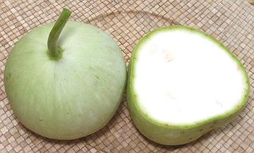

Probably originating in southern Africa, this gourd was one of the earliest plants to enter cultivation, probably more for containers than for food. Genetic analysis has shown they were carried from Asia to the Americas more than 8000 years ago.
Bottle gourds come in many shapes and sizes from long and snake like to spherical, but the form pictured is the one most common in Southern California. They will grow much larger but they get very bitter when more mature. Eventually the shell hardens and the gourd becomes hollow and may be used as a container or utensil, or carved decoratively. Young shoots and leaves are also edible. Dried strips of the gourd called Kampyo are important in Japan and often used as edible bindings to hold other ingredients together. The photo specimen was 12 inches long, 3-3/4 inches diameter and weighed 2-1/2 pounds, a touch above average for those sold in Southern California.
 Spherical opo gourds like the one in the photo to the left have started appearing in produce markets here in Los Angeles (2012). Some of these have a small neck at the stem end. The photo specimen was 4.5 inches diameter, and weighed 1 pound 1 ounces. the cut one was a little heavier at 1 pound 3 ounces. The cut version has a faintly visible seed (upper left), slightly beige in color, indicating this gourd is at maximum maturity for eating. The seeds of this variety are fairly large, due to it's large diameter. All characteristics except shape are the same for long and spherical Opos.
More on Gourds